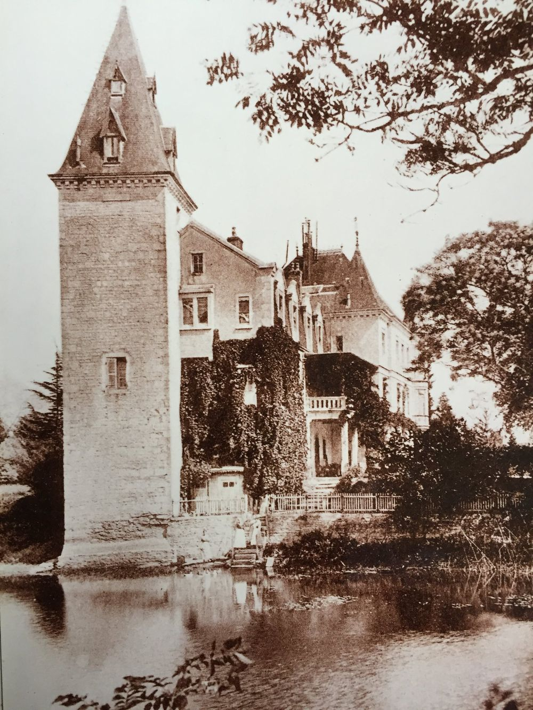
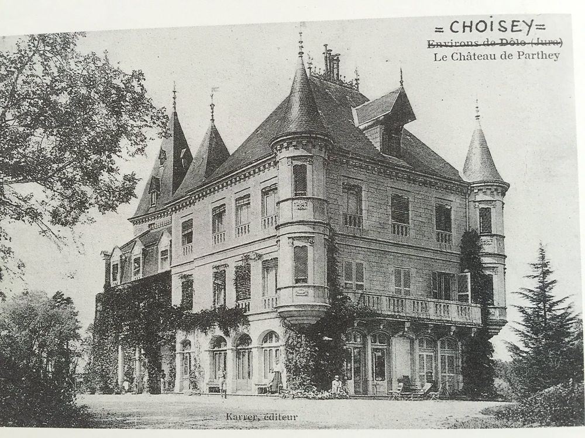
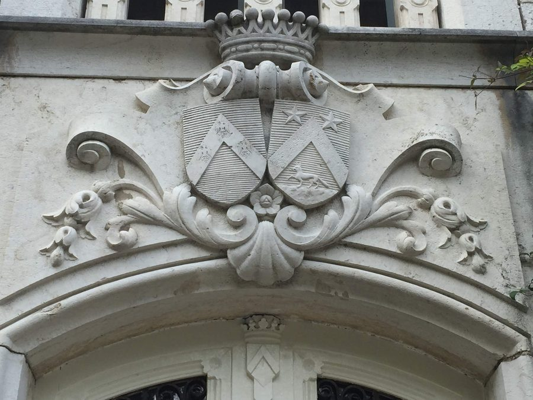
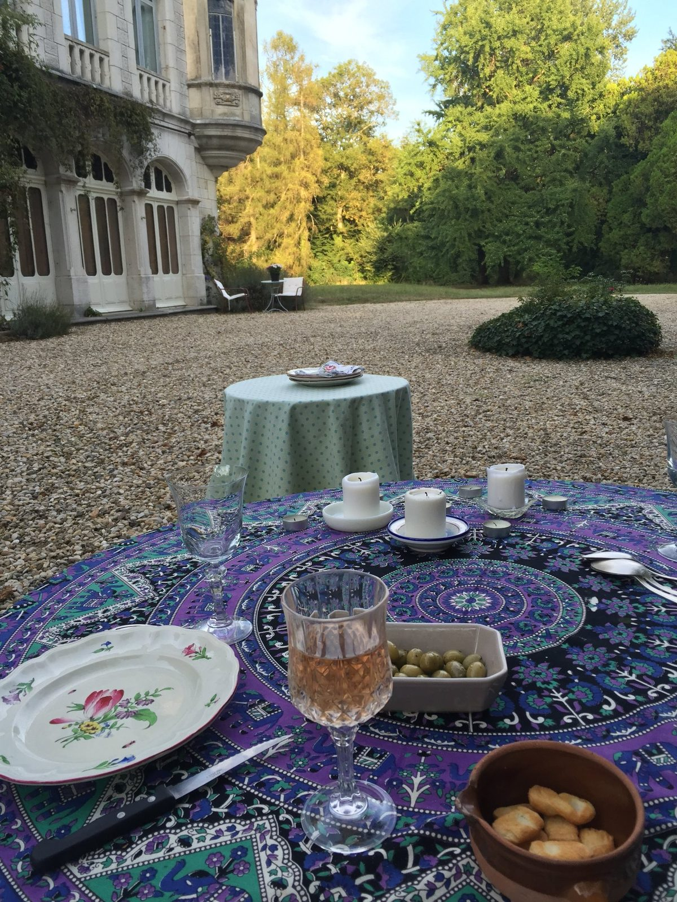
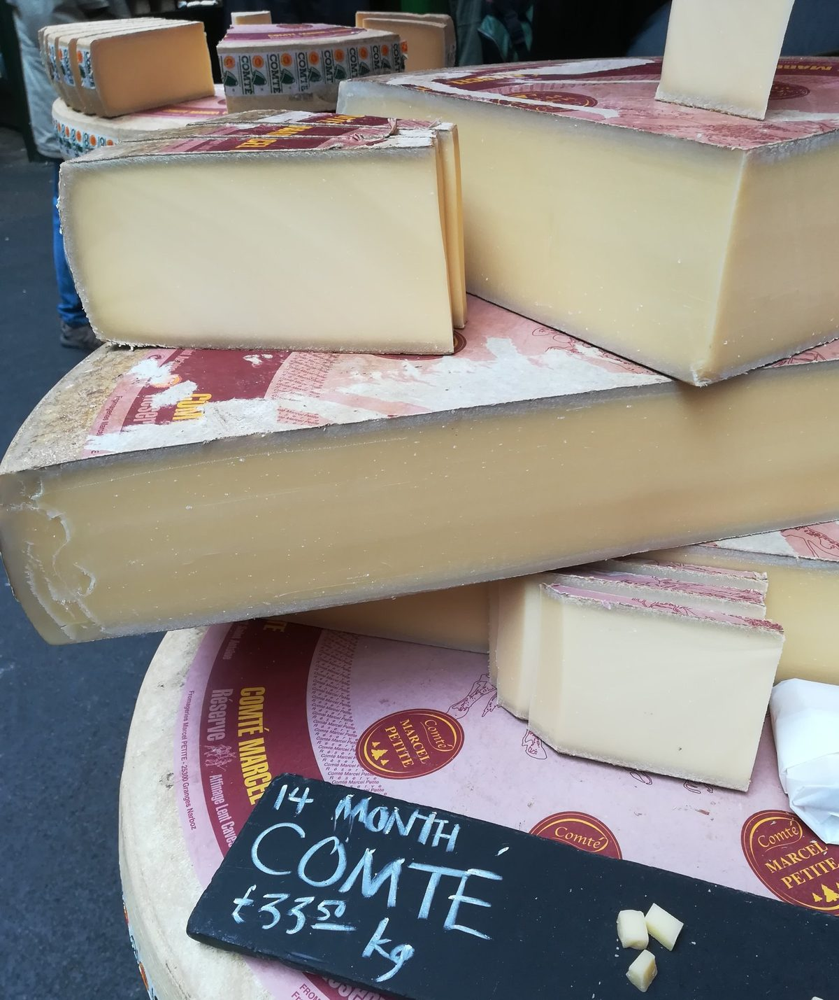
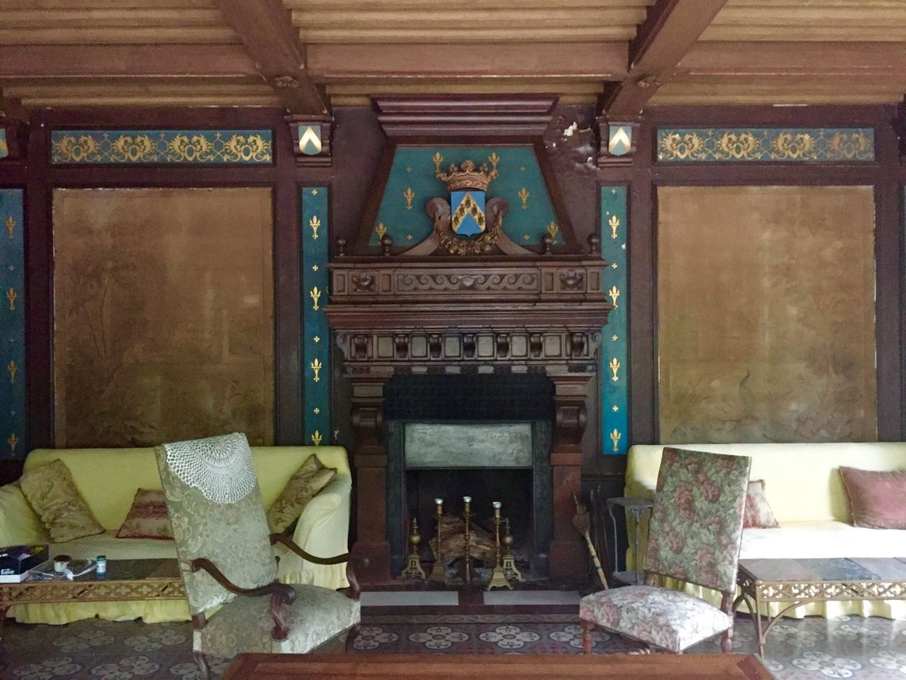

Parthey Productions
Landscapes, food, farming, and the people who tend them
Franche-Comté · Florianópolis · New York


We are not a travel agency. We are a production company — of films, of encounters, of experiences that leave something lasting. When we take you somewhere, it is because we belong there ourselves.
Every experience we offer is built around real relationships with real places: a tenant farmer who has worked the same Jura floodplain for decades, the cooperative where his milk becomes Comté, the Atlantic Forest trails behind our home in coastal Brazil.

Chateau de Parthey sits at the heart of Comté country. We offer curated weeks built around the farm, the fruitière, and the Jura landscape — with the chateau as your base.
Explore France →An island city where the Atlantic Forest meets the South Atlantic. Immersive experiences built around the agroecological food networks and natural landscape of Santa Catarina.
Explore Brazil →The same values in two completely different expressions. A combined itinerary connecting the Jura and Florianópolis — the experience that only we can offer, because both places are genuinely ours.
The Two-Continent Journey →


We don't take bookings before we talk. Write to us and tell us what you're looking for.
Get in Touch →